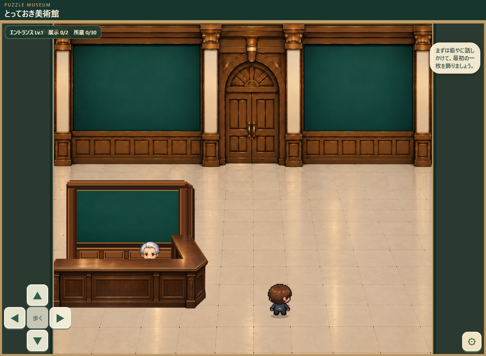

とっておき美術館｜受付奥の仕切り壁
2026年10月28日・位置確認用／カウンターは X=-10、Y=308、幅233、高さ107 で固定

実際にA18のゲームをChromeで起動して撮影したものです。カウンターの位置は両方とも同じです。壁だけを切り替えて見比べられます。
壁単体の透過画像（768×528 px、RGBA）。写真・額縁・台紙・背景・キャラクターは含めていません。周囲の市松模様は透過確認のための表示で、画像には入っていません。
今回の扱い：カウンターのX=-10配置は確定。仕切り壁は、まだ試作・未承認。既存の正式背景は描き直していません。素材だけを独立させてゲーム画面に重ねています。
※このページは美術素材の監修用です。正式な試遊ゲームへの公開反映ではありません。当たり判定と爺やの会話位置は仕切り壁の採用後に調整します。